March 3, 2022
Refine your plots
R packages
library(tidyverse) library(socviz) library(ggthemes) library(ggridges) library(ggrepel) library(RColorBrewer) library(dichromat) theme_set(theme_minimal())
Use color to your advantage
- You should choose a color palette based on the types of the data you are plotting.
- An unordered categorical variable (e.g., ‘Sex’ or ‘Country’) requires distinct colors that won’t be easily confused with one another.
- An ordered categorical variable (e.g., ‘Level of Education’) requires a graded color scheme of some kind running from less to more or earlier to later.
Use color to your advantage
We choose color palettes for mappings through one of the
scale_functions forcolororfill.RColorBrewerpackage provides a wide range of named color palettes.- You can access these colors by specifying the
scale_color_brewer()orscale_fill_brewer()functions withpaletteparameter.
- You can access these colors by specifying the
RColorBrewer’s sequential palettes

RColorBrewer’s diverging palettes

RColorBrewer’s qualitative palettes

Use color to your advantage
p <- ggplot(data = organdata,
mapping = aes(x = roads, y = donors, color = world))
p + geom_point(size = 2) + scale_color_brewer(palette = "Set2") +
theme(legend.position = "top")
Use color to your advantage
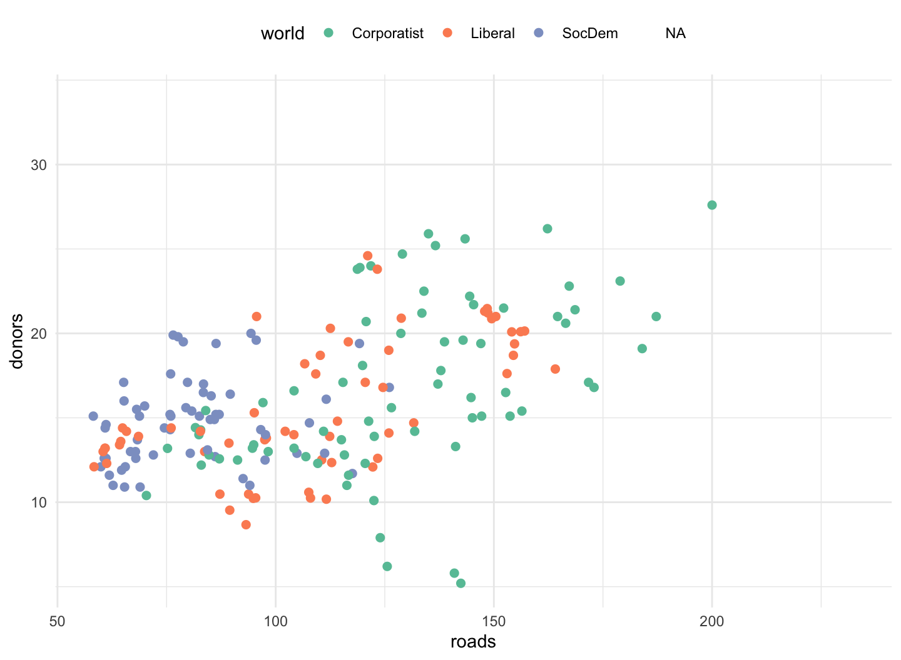
Use color to your advantage
p <- ggplot(data = organdata,
mapping = aes(x = roads, y = donors, color = world))
p + geom_point(size = 2) + scale_color_brewer(palette = "Pastel2") +
theme(legend.position = "top")
Use color to your advantage
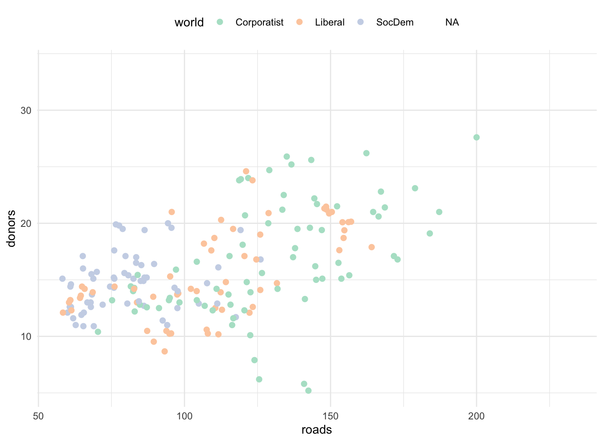
Use color to your advantage
p <- ggplot(data = organdata,
mapping = aes(x = roads, y = donors, color = world))
p + geom_point(size = 2) + scale_color_brewer(palette = "Dark2") +
theme(legend.position = "top")
Use color to your advantage
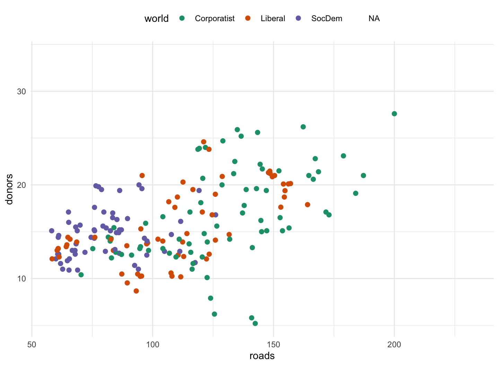
Use color to your advantage
- We can also specify colors manually, via
scale_color_manual()orscale_fill_manual().- These functions take
valuesargument that can be specified as vector of color names or hex colors.
- These functions take
p <- ggplot(data = organdata,
mapping = aes(x = roads, y = donors, color = world))
p + geom_point(size = 2) +
scale_color_manual(values = c("#3c6ff8", "#afd68d", "#8467ad", "#82857f")) +
theme_minimal() + theme(legend.position = "top")
Use color to your advantage
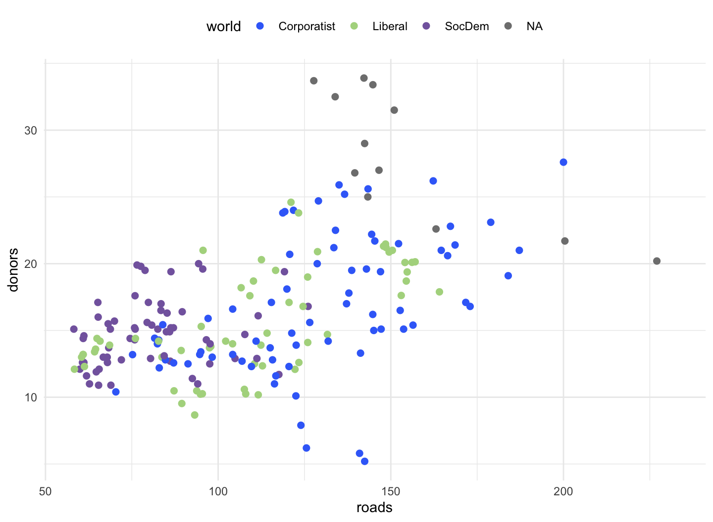
Use color to your advantage
Even though colorblind people can recognize a wide range of colors, it might be hard to differentiate between certain colors.
dichromatpackage provides a range of safe palettes and some useful functions for helping you approximately see what your current palette might look like to a viewer with one of several different kinds of color blindness.
Default <- brewer.pal(5, "Set2")
types <- c("deutan", "protan", "tritan")
names(types) <- c("Deuteronopia", "Protanopia", "Tritanopia")
color_table <- types %>%
purrr::map(~ dichromat(Default, .x)) %>%
as_tibble() %>%
add_column(Default, .before = TRUE)
color_table
## # A tibble: 5 × 4 ## Default Deuteronopia Protanopia Tritanopia ## <chr> <chr> <chr> <chr> ## 1 #66C2A5 #AEAEA7 #BABAA5 #82BDBD ## 2 #FC8D62 #B6B661 #9E9E63 #F29494 ## 3 #8DA0CB #9C9CCB #9E9ECB #92ABAB ## 4 #E78AC3 #ACACC1 #9898C3 #DA9C9C ## 5 #A6D854 #CACA5E #D3D355 #B6C8C8
Use color to your advantage
- Let’s compare a default color palette with an approximation of how the same palette appears to people with one of three kinds of color blindness.
color_comp(color_table)
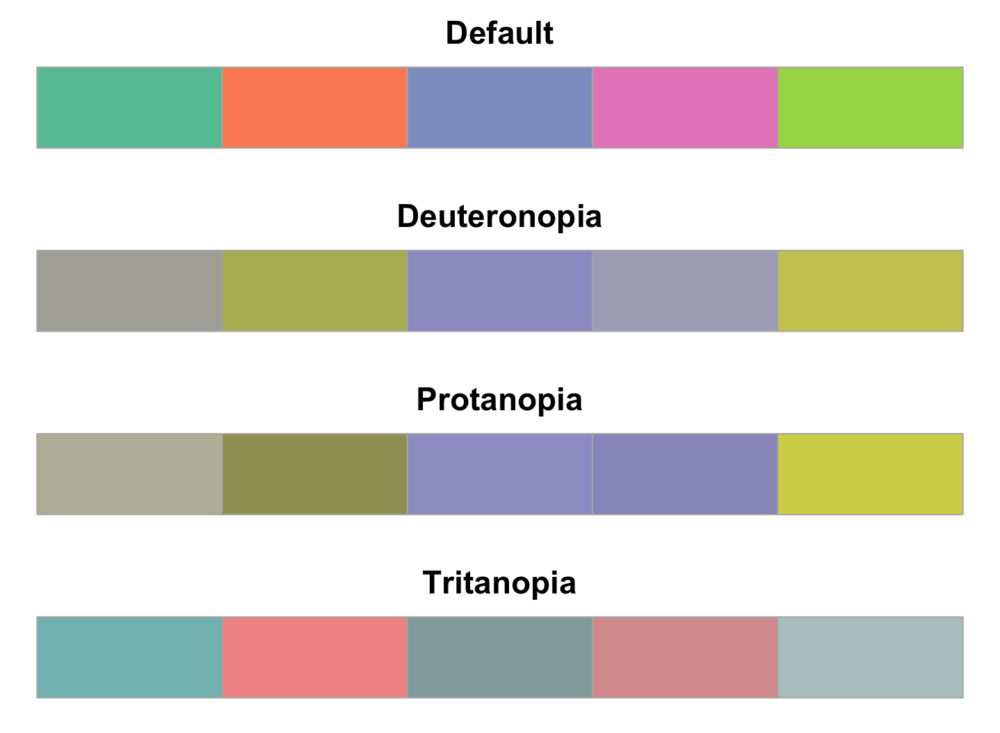
Use color to your advantage
RColorBrewerprovides the color-blind friendly pallets.
display.brewer.all(n=NULL, type="all", select=NULL, exact.n=TRUE, colorblindFriendly=TRUE)
Use color to your advantage
RColorBrewerprovides the color-blind friendly pallets.
brewer.pal.info
## maxcolors category colorblind ## BrBG 11 div TRUE ## PiYG 11 div TRUE ## PRGn 11 div TRUE ## PuOr 11 div TRUE ## RdBu 11 div TRUE ## RdGy 11 div FALSE ## RdYlBu 11 div TRUE ## RdYlGn 11 div FALSE ## Spectral 11 div FALSE ## Accent 8 qual FALSE ## Dark2 8 qual TRUE ## Paired 12 qual TRUE ## Pastel1 9 qual FALSE ## Pastel2 8 qual FALSE ## Set1 9 qual FALSE ## Set2 8 qual TRUE ## Set3 12 qual FALSE ## Blues 9 seq TRUE ## BuGn 9 seq TRUE ## BuPu 9 seq TRUE ## GnBu 9 seq TRUE ## Greens 9 seq TRUE ## Greys 9 seq TRUE ## Oranges 9 seq TRUE ## OrRd 9 seq TRUE ## PuBu 9 seq TRUE ## PuBuGn 9 seq TRUE ## PuRd 9 seq TRUE ## Purples 9 seq TRUE ## RdPu 9 seq TRUE ## Reds 9 seq TRUE ## YlGn 9 seq TRUE ## YlGnBu 9 seq TRUE ## YlOrBr 9 seq TRUE ## YlOrRd 9 seq TRUE
Layer color and text together
Color is very useful when we want to pick out or highlight some aspect of our data.
Let’s do a simple exploratory analysis on the relationship between politics and race using
color.First, use
county_datawith a value of “No” on theflippedvariable to draw a scatter plot on thepop-black/100plane.
party_colors <- c("#2E74C0", "#CB454A") # DEM Blue and REP Red
p0 <- ggplot(data = subset(county_data,
flipped == "No"),
mapping = aes(x = pop, y = black/100) )
p1 <- p0 + geom_point(alpha = 0.15, color = "gray50") +
scale_x_log10(labels=scales::comma)
p1
Layer color and text together
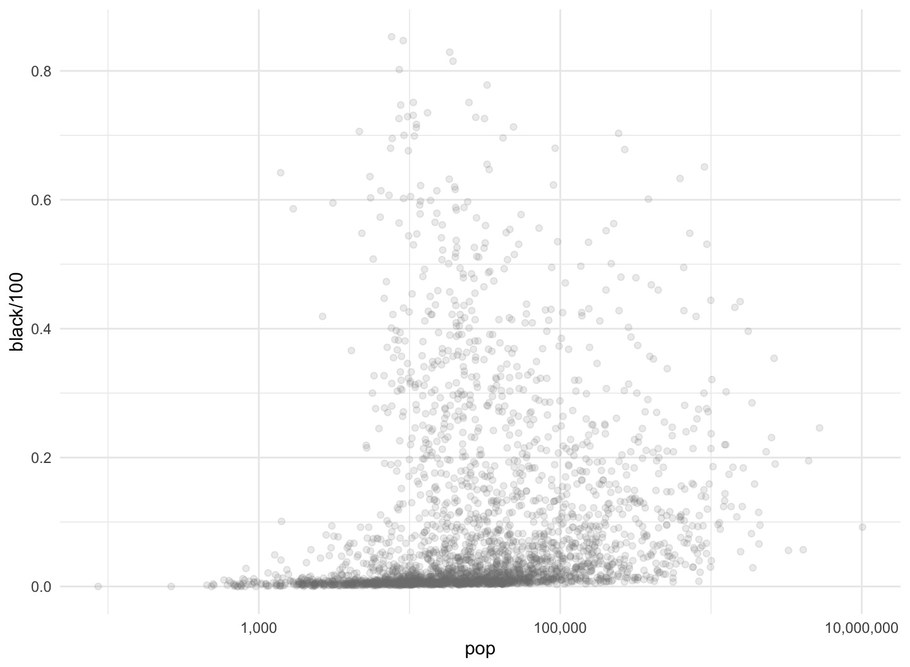
Layer color and text together
- Next, we add a second
geom_point()layer.- We choose the data with “Yes” counties on the
flippedvariable. - We map the
partywinner16variable to thecoloraesthetic usingscale_color_manual(values = party_colors).
- We choose the data with “Yes” counties on the
p2 <- p1 + geom_point(data = subset(county_data,
flipped == "Yes"),
mapping = aes(x = pop, y = black/100,
color = partywinner16)) +
scale_color_manual(values = party_colors)
p2
Layer color and text together
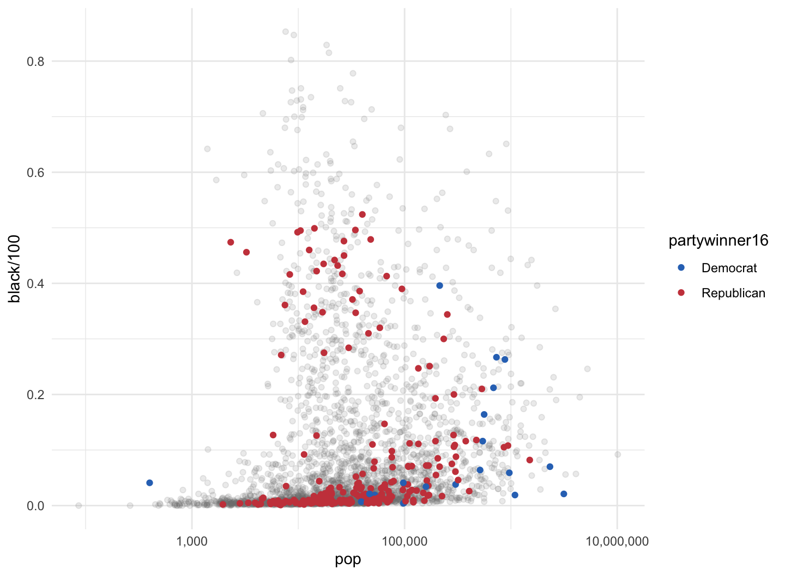
Layer color and text together
- Next, we set the y-axis scale and the labels.
p3 <- p2 + scale_y_continuous(labels=scales::percent) +
labs(color = "County flipped to ... ",
x = "County Population (log scale)",
y = "Percent Black Population",
title = "Flipped counties, 2016",
caption = "Counties in gray did not flip.")
p3
Layer color and text together
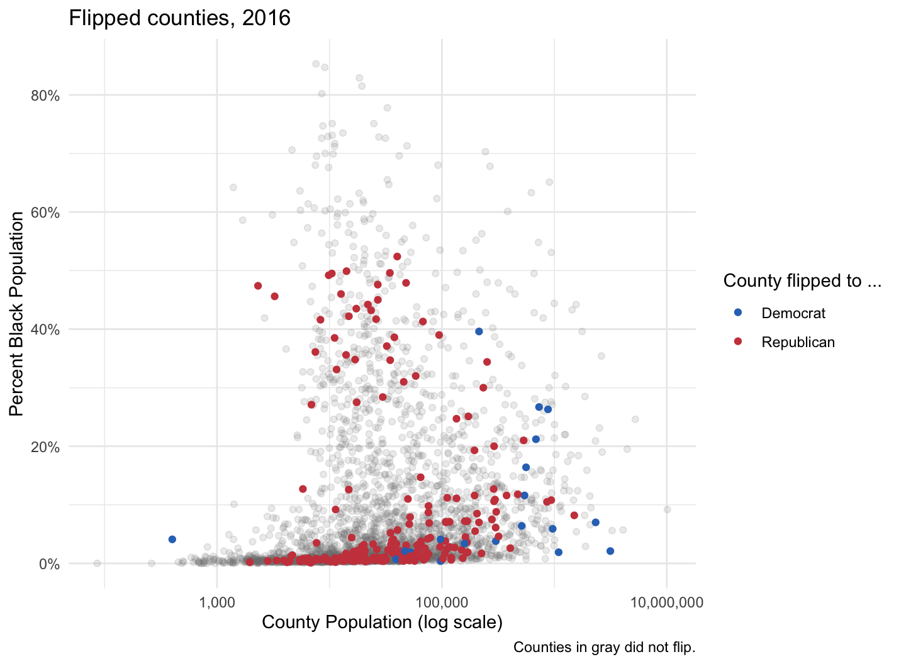
Layer color and text together
- Finally, we add a third layer using the
geom_text_repel()function.- We are interested in the
flippedcounties that have with a relatively high percentage of African-American residents (black> 25).
- We are interested in the
p4 <- p3 + geom_text_repel(data = subset(county_data,
flipped == "Yes" &
black > 25),
mapping = aes(x = pop,
y = black/100,
label = state), size = 2)
p4 + theme_minimal() +
theme(legend.position="top")
Layer color and text together
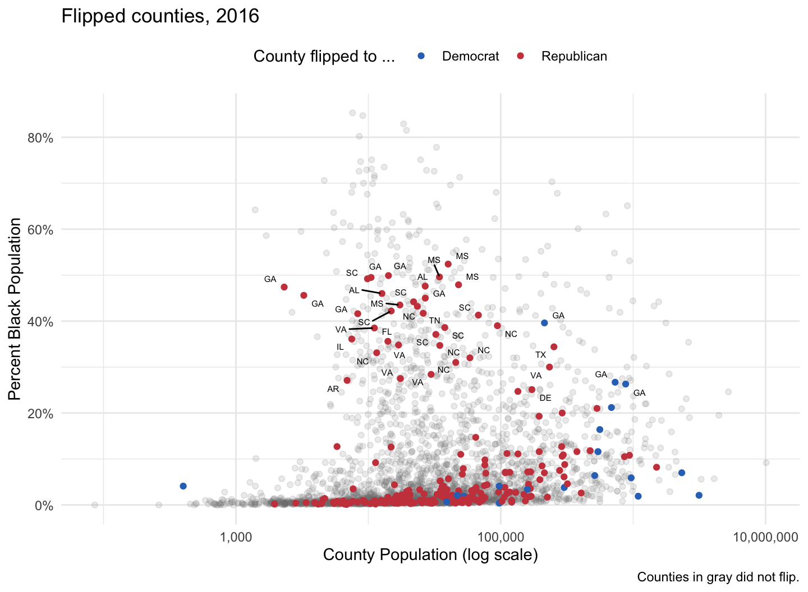
Layer color and text together
- We are now able to see the mappings, scales, and layers from the ggplot figures:
- Which variables are mapped to
xandy - Which to to
color,fill,shape,label, and so on. - What
geomswere used to produce them? - How have the scales been adjusted?
- Are the axes transformed?
- Are the fill and color legends combined?
- What is the base layer?
- What has been drawn on top of it, and in what order?
- Which upper layers are formed from subsets of the data?
- Which are new datasets?
- Are there annotations?
- Which variables are mapped to
Change the appearance of plots with themes
- The following lists the ggplot themes:
| theme | theme |
|---|---|
| theme_grey() | theme_gray() |
| theme_bw() | theme_linedraw() |
| theme_light() | theme_dark() |
theme_minimal() |
theme_classic() |
| theme_void() | theme_test() |
ggthemespackage providestheme_economist()andtheme_wsj().
Change the appearance of plots with themes
- If we want to change the overall look of it all at once, we can do that using ggplot’s theme engine.
- Themes can be turned on or off using the
theme_set()function.
- Themes can be turned on or off using the
theme_set(theme_economist()) p4 + theme(legend.position="top")
Change the appearance of plots with themes
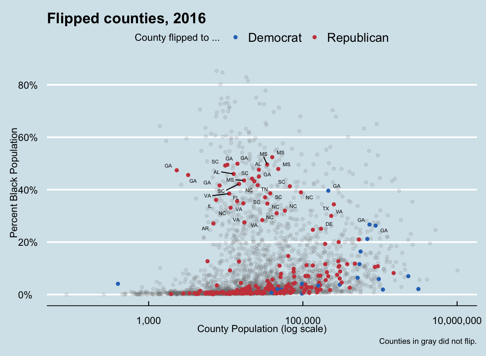
Change the appearance of plots with themes
theme_set(theme_wsj())
p4 + theme(plot.title = element_text(size = rel(0.6)),
legend.title = element_text(size = rel(0.35)),
plot.caption = element_text(size = rel(0.35)),
legend.position = "top")
Change the appearance of plots with themes
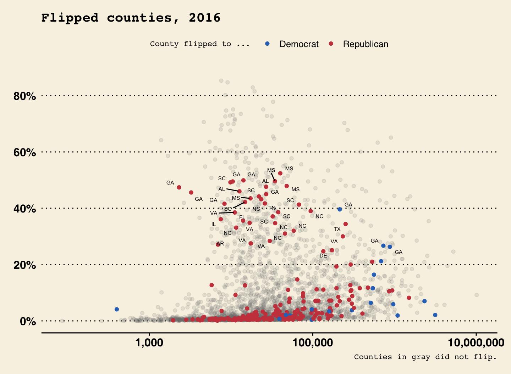
Change the appearance of plots with themes
- We can adjust the text size using
element_text()function.
theme_set(theme_wsj())
p4 + theme(plot.title = element_text(size = rel(0.6)),
legend.title = element_text(size = rel(0.35)),
plot.caption = element_text(size = rel(0.35)),
legend.position = "top")
Change the appearance of plots with themes
Change the appearance of plots with themes
cowplotpackage providestheme_cowplot().
# install.packages("cowplot")
library(cowplot)
theme_set(theme_cowplot())
p4 + theme(legend.position="top")
Change the appearance of plots with themes
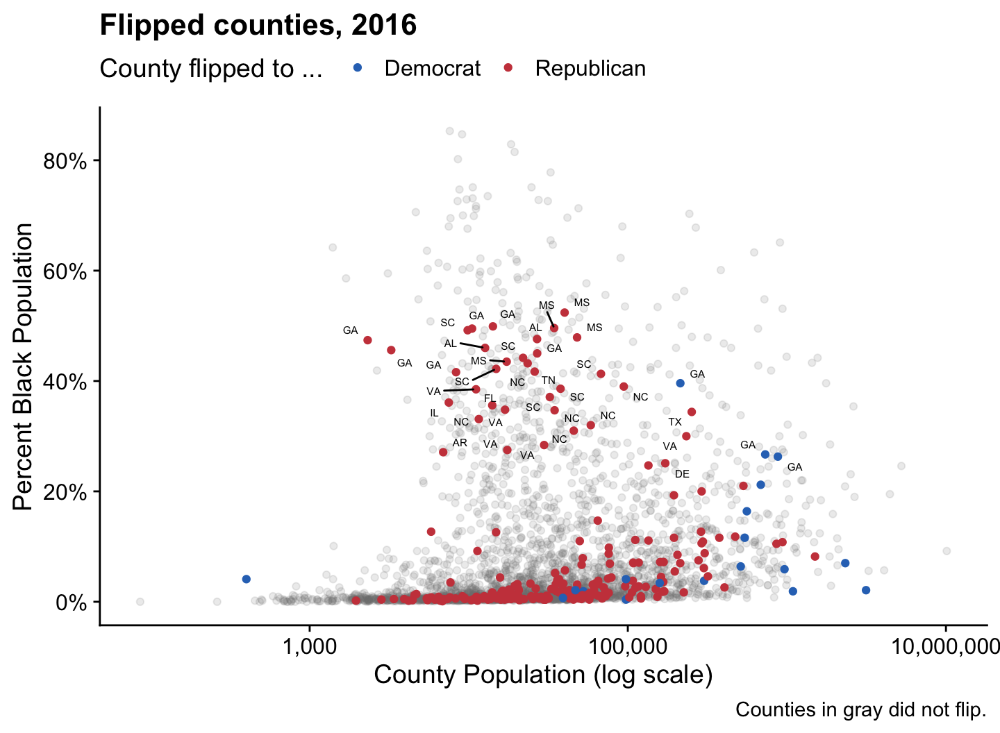
Change the appearance of plots with themes
hrbrthemespackage providestheme_ipsum(), which is similar to the theme used in our textbook.
# install.packages("hrbrthemes")
library(hrbrthemes)
theme_set(theme_ipsum())
p4 + theme(legend.position="top")
Change the appearance of plots with themes

Change the appearance of plots with themes
- We can also change font and color of the text.
p4 + theme(legend.position = "top",
plot.title = element_text(size=rel(2),
lineheight=.5,
family="Times",
face="bold.italic",
colour="orange"),
axis.text.x = element_text(size=rel(1.1),
family="Courier",
face="bold",
color="purple"))
Change the appearance of plots with themes
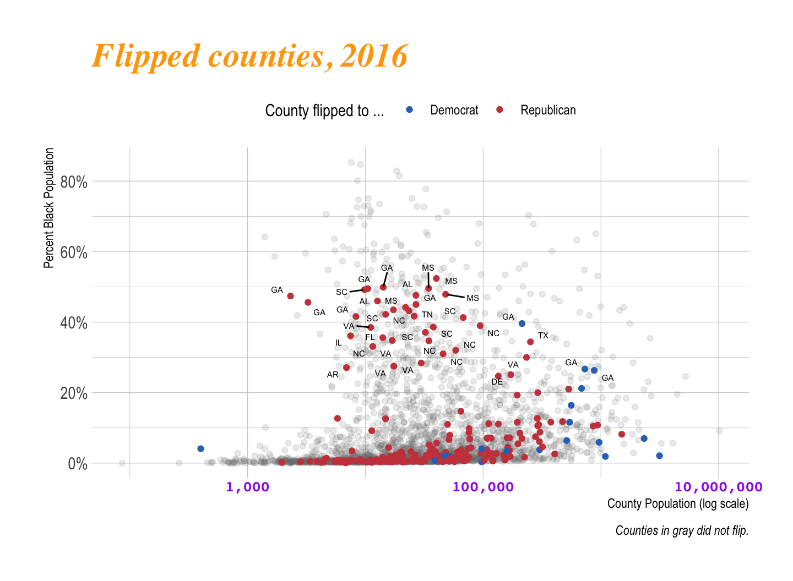
Change the appearance of plots with themes
- We can also use
element_blank()to remove a number of elements by naming them and making them disappear.
p4 + theme(legend.position = "top",
plot.title = element_text(size=rel(2),
lineheight=.5,
family="Times",
face="bold.italic",
colour="orange"),
axis.text.x = element_blank())
Change the appearance of plots with themes
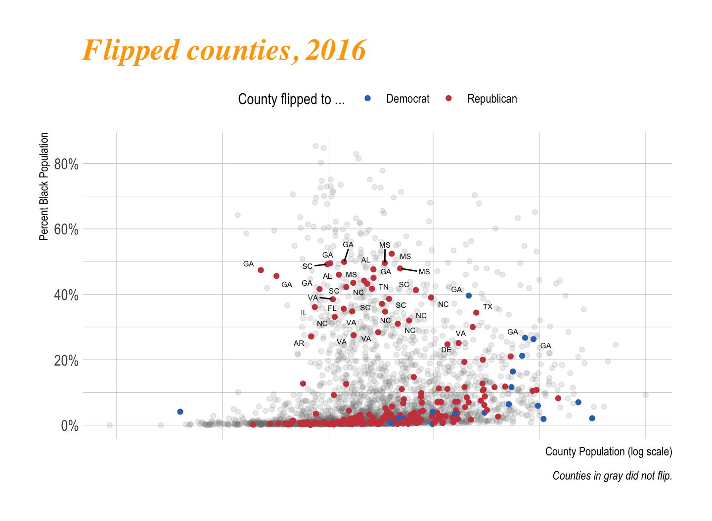
Change the appearance of plots with themes
Let’s create an effective small multiple of the age distribution of General Social Survey (GSS) respondents over the years using
gss_londata.First, we need to calculate the mean age of the respondents for each year of interest.
We will look at distributions about every four years since the beginning.
yrs <- c(seq(1972, 1988, 4), 1993, seq(1996, 2016, 4))
mean_age <- gss_lon %>%
filter(age %nin% NA && year %in% yrs) %>%
group_by(year) %>%
summarize(xbar = round(mean(age, na.rm = TRUE), 0))
mean_age$y <- 0.3 # to position the age as a text label.
yr_labs <- data.frame(x = 85, y = 0.8,
year = yrs)
Change the appearance of plots with themes
p <- ggplot(data = subset(gss_lon, year %in% yrs),
mapping = aes(x = age))
p1 <- p + geom_density(fill = "black", color = FALSE,
alpha = 0.9, mapping = aes(y = ..scaled..)) +
geom_vline(data = subset(mean_age, year %in% yrs),
aes(xintercept = xbar), color = "white", size = 0.5) +
geom_text(data = subset(mean_age, year %in% yrs),
aes(x = xbar, y = y, label = xbar), nudge_x = 7.5,
color = "white", size = 3.5, hjust = 1) +
geom_text(data = subset(yr_labs, year %in% yrs),
aes(x = x, y = y, label = year)) +
facet_grid(year ~ ., switch = "y")
p1
The first
geom_text()call uses anudgeargument to push the label slightly to the right of its x-value (nudge_x).In the
facet_grid()we use theswitchargument to move the labels to the left.
Change the appearance of plots with themes
- With the structure of the plot in place, we then style the elements in the way that we want, using a series of instructions to
theme().
p2a <- p1 + theme(plot.title = element_text(size = 16),
axis.text.x= element_text(size = 12),
axis.line.x = NULL,
axis.title.y=element_blank(),
axis.text.y=element_blank(),
axis.ticks.y = element_blank(),
strip.background = element_blank(),
strip.text.y = element_blank(),
panel.grid.major = element_blank(),
panel.grid.minor = element_blank()) +
labs(x = "Age",
y = NULL,
title = "Age Distribution of\nGSS Respondents")
p2a
Change the appearance of plots with themes
ggridgesallows the distributions to overlap vertically.- It is especially useful for repeated distributional measures that change in a clear direction.
p <- ggplot(data = gss_lon,
mapping = aes(x = age, y = factor(year, levels = rev(unique(year)),
ordered = TRUE)))
p2b <- p + geom_density_ridges(alpha = 0.6, fill = "lightblue", scale = 1.5) +
scale_x_continuous(breaks = c(25, 50, 75)) +
scale_y_discrete(expand = c(0.01, 0)) +
labs(x = "Age", y = NULL,
title = "Age Distribution of\nGSS Respondents") +
theme_ridges() +
theme(title = element_text(size = 16, face = "bold"))
p2b
Change the appearance of plots with themes
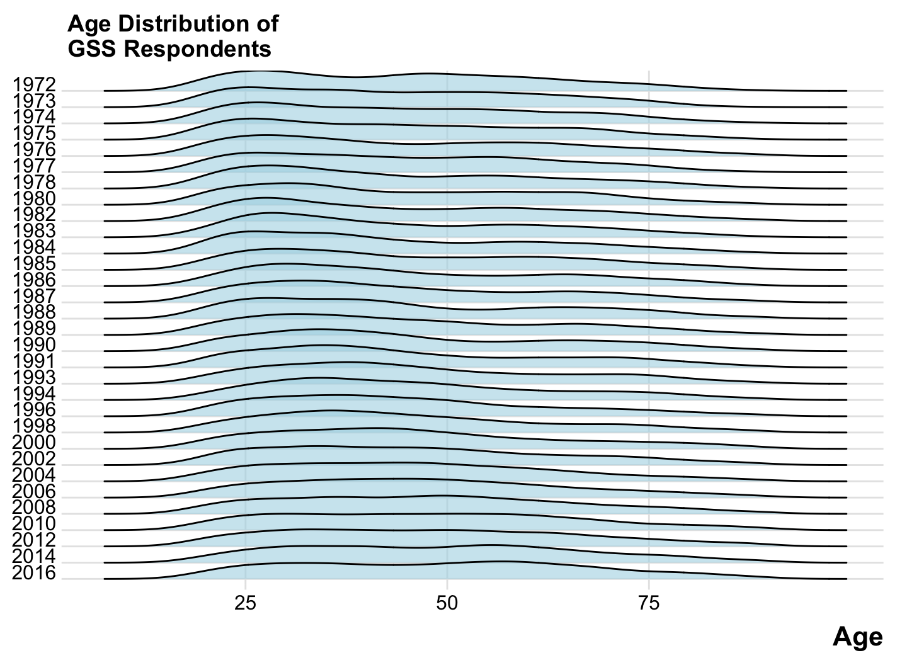
Arrange plots with grid.arrange()
gridExtrapackage providesgrid.arrange()function.grid.arrange()arranges multipleggplotobjects on a page, and draw tables of figures.
library(gridExtra) grid.arrange(p2a, p2b, nrow = 1) # sub-figures
Arrange plots with grid.arrange()
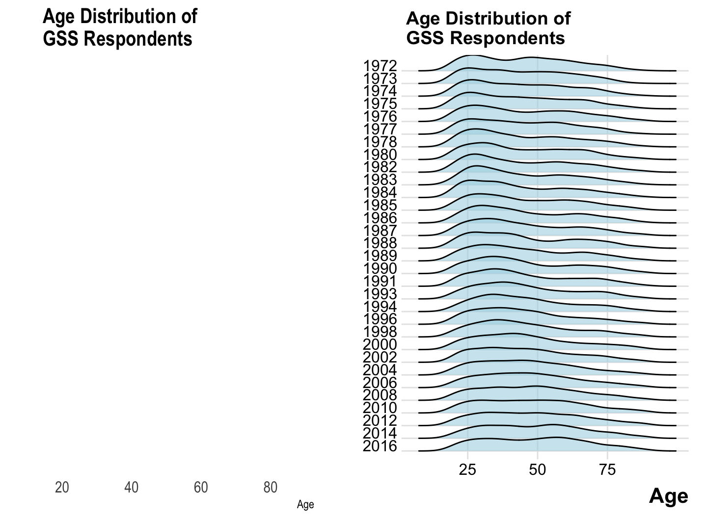